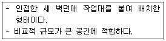
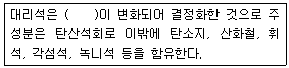
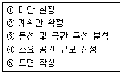

실내건축기능사 (2011-04-17 기출문제)
1과목: 실내디자인
1. 실내공간을 넒어 보이게 하는 방법과 가장 거리가 먼 것은?
- 큰 가구는 벽에 부착시켜 배치한다.
- 벽면에 큰 거울을 장식해 실내공간을 반사시킨다.
- 빈 공간에 화분이나 어항, 또는 운동기구 등을 배치한다.
- 창이나 문 등의 개구부를 크게 하여 옥외공간과 시선이 연장되도록 한다.
(정답률: 90%)

2. 점과 선의 조형효과에 대한 설명 중 옳지 않은 것은?
- 점은 선과 달리 공간의 착시효과를 이끌어 낼 수 없다.
- 선은 여러 개의 선을 이용하여 움직임, 속도감 등을 시각적으로 표현할 수 있다.
- 배경의 중심에 있는 하나의 점은 점에 시선을 집중시키고 정지의 효과를 느끼게 한다.
- 동일한 크기의 두 개의 점이 있을 때 두 점 사이에는 상호간 장력이 발생하여 선의 효과가 생긴다.
(정답률: 78%)
3. 동적이고 불안정한 느낌을 주나, 건축에 강한 표정을 주기도 하는 선은?
- 곡선
- 수직선
- 수평선
- 사선
(정답률: 72%)
4. 동선계획을 가장 잘 나타낼 수 있는 실내 계획은?
- 천장계획
- 입면계획
- 평면계획
- 구조계획
(정답률: 87%)
5. 다음 설명에 알맞은 부엌의 작업대 배치 방식은?

- 일렬형
- ㄴ자형
- ㄷ자형
- 병렬형
(정답률: 94%)
6. 실내디자인에서 가구나 실의 크기를 결정하는 기준이 되는 것은?
- 그리드
- 휴먼스케일
- 모듈
- 공간의 형태
(정답률: 75%)
7. 상업공간에서 디스플레이의 궁극적 목적은?
- 상품 소개
- 상품 판대
- 쾌적한 관람
- 학습능률의 향상
(정답률: 54%)
8. 다음 설명에 알맞은 디자인의 구성 원리는? 일반적으로 규칙적인 요소들의 반복으로 디자인에 시각적인 질서를 부여하는 통제된 운동감각을 말한다.
- 균형
- 비례
- 통일
- 리듬
(정답률: 74%)
9. 균형의 원리에 대한 설명 중 옳지 않은 것은?
- 크기가 큰 것이 작은 것보다 시각적 중량감이 크다.
- 기하학적 형태가 불규칙적인 형태보다 시각적 중량감이 크다.
- 색의 중량감은 색의 속성 중 특히 명도, 채도에 따라 크게 작용한다.
- 복잡하고 거친 질감이 단순하고 부드러운 것보다 시각적 중량감이 크다.
(정답률: 84%)
10. 실내공간의 바닥부분에 있어 공간에 대한 스케일 감의 변화를 줄 수 있는 방법으로 가장 적당한 것은?
- 질감의 변화
- 색채의 변화
- 단차(level)의 변화
- 인테리어 구성재의 변화
(정답률: 60%)
11. 특정 상품을 효과적으로 비추어 상품을 강조할 때 이용되는 조명 방식은?
- 다운 라이트
- 브라켓
- 스포트 라이트
- 팬던트
(정답률: 77%)
12. 건물과 일체화하여 만든 가구로서 공간을 최대한 활용할 수 있는 가구는?
- 가동 가구
- 붙박이 가구
- 모듈러 가구
- 작업용 가구
(정답률: 91%)
13. 실내디자인의 가장 중요한 목표는 생활공간을 쾌적하게 하는 것이다. 이를 위해 일반적으로 가장 우선시 되어야 하는 것은?
- 기능
- 미
- 개성
- 유행
(정답률: 90%)
14. 다음 중 주택의 부엌과 식당 계획시 가장 중요하게 고려하여야 할 사항은?
- 조명배치
- 작업동선
- 색채조화
- 채광계획
(정답률: 90%)
15. 주택 실내공간의 색채계획에 대한 설명 중 옳지 않은 것은?
- 화장실은 전체를 밝은 느낌의 색조로 처리하는 것이 바람직하다.
- 바닥은 벽면보다 약간 어두우며 안정감 있는 색을 사용한다.
- 침실은 보통 깊이 있는 중명도의 저채도로 정돈한다.
- 낮은 천장을 높게 보이게 하려면 천장의 색을 벽보다 어두운 색채로 한다.
(정답률: 80%)
16. 천장, 벽의 구조체에 의해 광원의 빛이 천장 또는 벽면으로 가려지게 하여 반사광으로 간접 조명하는 건축화조명방식은?
- 코니스 조명
- 코브 조명
- 광창 조명
- 광천장 조명
(정답률: 51%)
17. 다음 설명데 알맞은 환기 방법은? - 실내공기를 강제적으로 배출시키는 방법으로 실내는 부압이 된다. 주택의 화장실, 욕실 등의 환기에 적합하다.
- 자연환기
- 압입식 환기(급기팬과 자연배기의 조합)
- 흡출식 환기(자연급기와 배기팬의 조합)
- 병용식 환기(급기팬과 배기팬의 조합)
(정답률: 64%)
18. 음의 고저(pitch)를 결정하는 요소는?
- 음속
- 음색
- 주파수
- 잔향시간
(정답률: 69%)
19. 열에 관한 설명으로 옳지 않은 것은?
- 열은 온도가 낮은 곳에서 높은 곳으로 이동한다.
- 열이 이동하는 형식에는 복사, 대류, 전도가 있다.
- 대류는 유체의 흐름에 의해서 열이 이동되는 것을 총칭한다.
- 벽과 같은 고체를 통하여, 유체(공기)에서 유체(공기)로 열이 전해지는 현상을 열관류라고 한다.
(정답률: 69%)
20. 조도 분포의 정도를 표시하며 최고조도에 대한 최저조도의 비율로 나타내는 것은?
- 휘도
- 조명도
- 균제도
- 광도
(정답률: 45%)
2과목: 실내환경
21. 석재의 사용상 주의점으로 옳지 않은 것은?
- 동일 건축물에는 동일 석재로 시공하도록 한다.
- 중량이 큰 것은 높은 곳에 사용하지 않도록 한다.
- 재형(材形)에 예각부가 생기며 결손되기 쉽고 풍화 방지에 나쁘다.
- 석재는 취약하므로 구조재는 직압력재로 사용하지 않도록 한다.
(정답률: 59%)
22. 목재의 심재에 대한 설명 중 옳지 않은 것은?
- 변재보다 비중이 크다.
- 변재보다 신축이 적다.
- 변재보다 내후성. 내구성이 크다.
- 일반적으로 변재보다 강도가 작다.
(정답률: 65%)
23. 모래붙임루핑에 유사한 제품을 지붕재료로 사용하기 좋은 형으로 만든 것으로 기와나 슬레이트 대용으로 사용되는 것은?
- 아스팔트 펠트
- 아스팔트 유제
- 아스팔트 블록
- 아스팔트 싱글
(정답률: 52%)
24. 골재 중의 유해물에 속하지 않는 것은?
- 쇄석
- 후민산
- 이분(泥分)
- 염분
(정답률: 50%)
25. 합성수지에 관한 설명 중 옳지 않은 것은?
- 가공성이 크다.
- 흡수성이 크다.
- 전성, 연성이 크다.
- 내열, 내화성이 작다.
(정답률: 44%)
26. 다음 중 시멘트 페이스트(cement paste)에 대한 설명으로 가장 알맞은 것은?
- 시멘트와 물을 혼합한 것이다.
- 시멘트와 물, 잔골재를 혼합한 것이다.
- 시멘트와 물, 잔골재, 굵은골재를 혼합한 것이다.
- 시멘트와 물, 잔골재, 굵은골재, 혼화재료를 혼합한 것이다.
(정답률: 45%)
27. 재료의 역학적 성질 중 물체에 외력이 작용하면 순간적으로 변형이 생기나 외력을 제거하면 순간적으로 원래의 형태로 회복되는 성질은?
- 전성
- 소성
- 탄성
- 연성
(정답률: 87%)
28. 강화유리에 대한 설명 중 옳지 않은 것은?
- 안전유리의 일종이다.
- 현장에서 가공 및 절단이 용이하다.
- 파괴시 세립상으로 되어 부상을 입을 우려가 적다.
- 보통판유리와 광낸 판유리를 열처리하여 강화시킨 것이다.
(정답률: 87%)
29. 다음 중 합판에 대한 설명으로 옳지 않은 것은?
- 함수율 변화에 따른 팽창, 수죽의 방향성이 크다.
- 단판(veneer)을 섬유방향이 서로 직교하도록 겹쳐 붙인 것이다.
- 뒤틀림이나 변형이 적은 비교적 큰 면적의 평면재료를 얻을 수 있다.
- 합판을 구성하는 단판의 매수는 일반적으로 3겹, 5겹, 7겹 등 홀수 매수로 한다.
(정답률: 55%)
30. 다음 점토제품 중 흡수성이 가장 작은 것은?
- 토기
- 도기
- 석기
- 자기
(정답률: 75%)
3과목: 실내건축재료
31. 유성페인트에 대한 설명 중 옳지 않은 것은?
- 건조시간이 가장 짧다.
- 내알칼리성이 약하다.
- 붓바름 작업성 및 내후성이 우수하다.
- 모르타르, 콘크리트 등에 정벌바름하면 피막이 부서져 떨어진다.
(정답률: 54%)
32. 강의 열처리법에 속하지 않는 것은?
- 불림
- 풀림
- 단조
- 담금질
(정답률: 75%)
33. 포틀랜드시멘트의 알루민산철3석회를 극히 적게 한 것으로 소량의 안료를 첨가하면 좋아하는 색을 얻을 수 있으며 건축물 내외맨의 마감, 각종 인조석 제조에 사용되는 것은?
- 백색포틀랜드시멘트
- 저열포틀랜드시멘트
- 내황산염포트랜드시멘트
- 조강포틀랜드시멘트
(정답률: 64%)
34. 점토에 톱밥, 겨, 탄가루 등을 혼합, 소서한 것으로 절단, 못치기 등의 가공이 우수하며 방음, 흡음성이 좋은 건축용 벽돌은?
- 내화벽돌
- 다공벽돌
- 이형벽돌
- 포도벽돌
(정답률: 71%)
35. 다음 중 건축용 단열재에 속하지 않는 것은?
- 유리 섬유
- 석고 플라스터
- 양면
- 폴리 우레탄폼
(정답률: 46%)
36. 미장재료 중 자신이 물리적 또는 화학적으로 고체화하여 미장바름의 주체가 되는 재료가 아닌 것은?
- 소석회
- 규산소다
- 점토
- 석고
(정답률: 61%)
37. 내열성. 내한성이 우수한 수지로 -60~260℃의 범위에서는 안정하고 탄성을 가지며 내후성 및 내화학성이 우수한 열경화성 수지는?
- 염화비닐수지
- 요소수지
- 아크릴수지
- 실리콘수지
(정답률: 60%)
38. 목재의 접합부에 끼워 볼트와 같이 사용하는 것으로, 주로 전단력에 작용시켜 접합부재 상호간의 변위를 방지하여 강성의 이음을 얻기 위한 목적으로 쓰이는 것은?
- 클램프
- 스터럽
- 메탈리스
- 듀벨
(정답률: 80%)
39. 다음 ( )안에 알맞는 석재는?

- 석회석
- 감람석
- 응회암
- 점판암
(정답률: 77%)
40. 다음 중 콘크리트의 콘시스텐스(consistency)측정 방법에 해당하지 않는 것은?
- 브레인법
- 슬럼프 시험
- 비비(vebe)시험
- 다짐계수시험
(정답률: 43%)
41. 철골조의 주각을 이루는 부재가 아닌 것은?
- 베이스 플레이트(Base plate)
- 리브 플레이트(Rib plate)
- 거셋 플레이트(Gusset plate)
- 윙 플레이트(Wing plate)
(정답률: 60%)
42. 실내의 유효 면적을 감소시키는 단점이 있는 목재 창호는?
- 미서기 창호
- 여닫이 창호
- 미닫이 창호
- 붙박이 창호
(정답률: 67%)
43. 주택 평면 계획의 순서가 옳게 연결된 것은?

- ① → ② → ③ → ④ → ⑤
- ② → ① → ③ → ⑤ → ④
- ③ → ④ → ① → ② → ⑤
- ④ → ① → ② → ③ → ⑤
(정답률: 44%)
44. 다음 중 목구조에 대한 설명으로 옳지 않은 것은?
- 건물의 무게가 가볍고, 가공이 비교적 용이하다.
- 내화성이 부족하다.
- 함수율에 따른 변형이 거의 없다.
- 나무 고유의 색깔과 무늬가 있어 아름답다.
(정답률: 78%)
45. 철골구조의 용접접합에 대한 설명으로 옳은 것은?
- 검사가 어렵고 비용과 시간이 많이 소요된다.
- 강재의 재질에 대한 영향이 적다.
- 용접부 내부의 결함을 육안으로 관찰할 수 있다.
- 용접공의 기능에 따른 품질의존도가 적다.
(정답률: 42%)
46. 종이에 일정한 크기의 격자형 무늬가 인쇄되어 있어서, 계획 도면을 작성하거나 평면을 계획할 때 사용 하기가 편리한 제도지는?
- 켄트지
- 방안지
- 트레이싱지
- 트레팔지
(정답률: 64%)
47. 조립식 구조에 대한 설명으로 옳지 않은 것은?
- 건축의 생산성을 향상시키기 위한 방안으로 조립식 건축이 성행되었다.
- 규격화된 각종 건축 부재를 공장에서 대량 생산할 수 있다.
- 기계화 시공으로 단기 완성이 가능하다.
- 각 부재의 접합부를 일체화하기 쉽다.
(정답률: 60%)
48. 단면에 방향성이 없으며 콘크리트 타설시 별도의 거푸집이 불필요한 구조는?
- 경량철골구조
- 강관구조
- PS콘크리트구조
- 철골철근콘크리트구조
(정답률: 34%)
49. 다음 중 건축재도의 치수 기입에 관한 설명으로 옳지 않은 것은?
- 협소한 간격이 연속될 때에는 인출선을 사용하여 치수를 쓴다.
- 치수는 특별히 명시하지 않는 한 마무리 치수로 표시한다.
- 치수 기입은 치수선에 평행하게 도면의 왼쪽에서 오른쪽으로, 아래로부터 위로 읽을 수 있도록 기입한다.
- 치수 기입은 항상 치수선 중앙 아래 부분에 기입하는 것이 원칙이다.
(정답률: 77%)
50. 조적구조에서 창문 위를 가로질러 상부에서 오는 하중을 좌ㆍ우벽으로 전달하는 부재는?
- 테두리보
- 안방보
- 지중보
- 평보
(정답률: 39%)
4과목: 건축일반
51. 조적구조에 대한 내용으로 옳지 않은 것은?
- 내구, 내화적이다.
- 건식구조이다.
- 각종 횡력에 약하다.
- 고층 건물에의 적용이 어렵다.
(정답률: 58%)
52. 서로 직각으로 교차되는 벽을 무엇이라 하는가?
- 내력벽
- 대린벽
- 부축벽
- 칸막이벽
(정답률: 47%)
53. 철골 판보에서 웨브의 두께가 춤에 비해서 얇을 때, 웨브의 국부 좌굴을 방지하기 위해서 사용되는 것은?
- 스티프너
- 커버 플레이트
- 거셋플레이트
- 베이스 플레이트
(정답률: 54%)
54. 철골 콘크리트 구조의 장점이 아닌 것은?
- 내화성과 내구성이 크다.
- 목구조에 비해 횡력이 강하다.
- 설계가 비교적 자유롭다.
- 공사기간이 짧고 기후의 영향을 받지 않는다.
(정답률: 76%)
55. 철골구조에 대한 설명 중 옳지 않은 것은?
- 철골구조는 하중을 전달하는 주요 부재인 보나 기둥 등을 강재를 이용하여 만든 구조이다.
- 철골구조를 재료상 라멘구조, 가새골조구조, 튜브구조, 트러스구조 등으로 분류할 수 있다.
- 철골구조는 일반적으로 부재를 접합하여 뼈대를 구성하는 가구식 구조이다.
- 내화피복을 필요로 한다.
(정답률: 52%)
56. 다음 중 건축 설계도면에서 중심선, 전달선, 경계선 등으로 사용되는 선은?
- 실선
- 일점쇄선
- 이점쇄선
- 파선
(정답률: 79%)
57. 블록조 벽체의 보강철근 배근요령으로 옳지 않은 것은?
- 철근의 정착이음은 기초보나 테두리보에 만든다.
- 철근이 배근된 것은 피복이 충분하도록 모르타르로 채운다.
- 세로근은 기초에서 보까지 하나의 철근으로 하는 것이 좋다.
- 철근은 가는 것을 많이 넣는 것보다 굵은 것을 조금 넣는 것이 좋다.
(정답률: 64%)
58. 목구조에서 벽채의 제일 아래 부분에 쓰이는 수평재로서 기초에 하중을 전달하는 역할을 하는 부재의 명칭은?
- 기둥
- 안방보
- 토대
- 가새
(정답률: 53%)
59. 건축물을 각 층마다 창틀 위에서 수평으로 자른 수평투상도로서 실의 배치 및 크기를 나타내는 도면은?
- 평면도
- 입면도
- 단면도
- 전개도
(정답률: 67%)
60. 건물 구조의 기본 조건 중 내구성을 가장 강조한 설명은?
- 최소의 공사비로 만족할 수 있는 공간을 만드는 것
- 건물 자체의 아름다움 뿐만 아니라 주위의 배경과도 조화를 이루게 만드는 것
- 오래 사용해야 하기에 안전과 역학적 및 물리적 성능이 잘 유지되도록 만드는 것
- 건물 안에는 항상 사람이 생활한다는 생각을 두고 아름답고 기능적으로 만드는 것
(정답률: 80%)